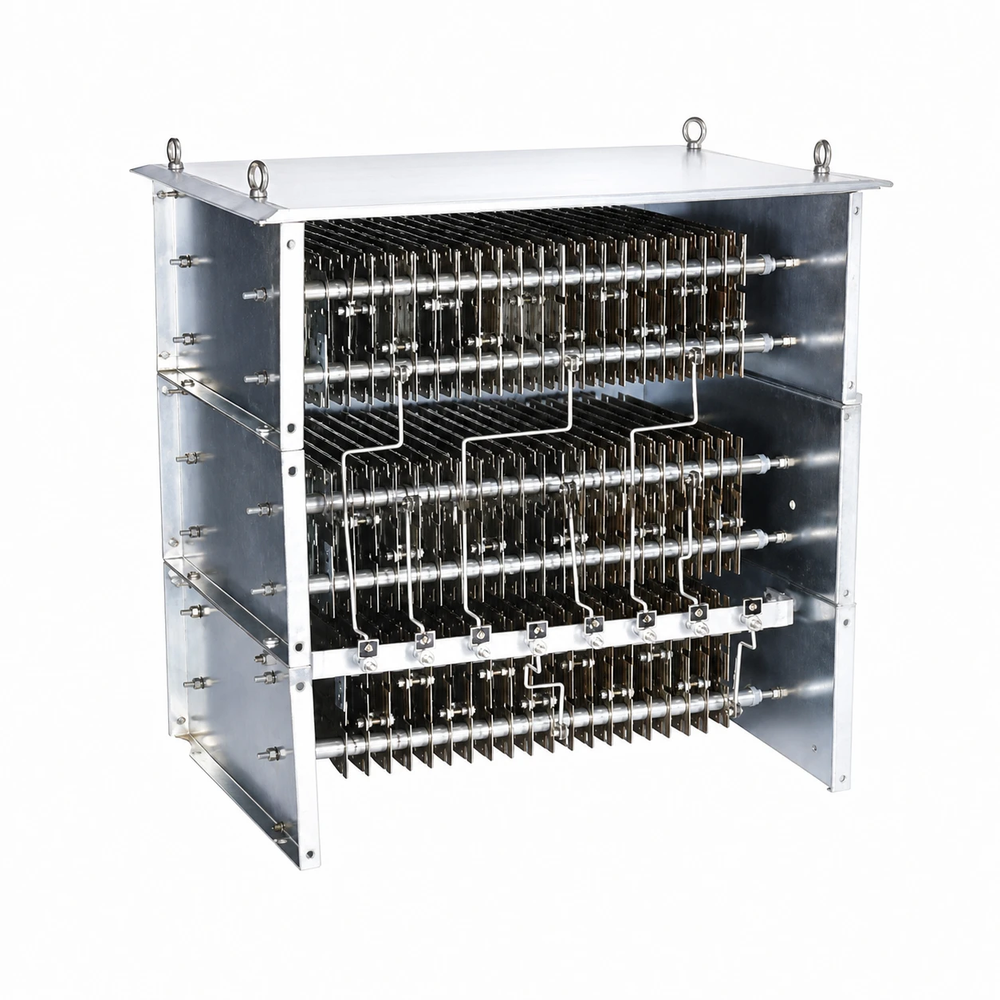

Gururaj Infradesigns offers Stainless Steel Punched Grids in SS 304 & SS 316 grades for resistance boxes, dynamic braking resistors, crane resistor banks, and industrial motor control applications with reliable heat dissipation and durable performance.
Gururaj Infradesigns is one of the trusted Stainless Steel Punched Grids manufacturers in India offering high-quality resistor assemblies for industrial electrical and motor control applications. Our SS punched grids are widely used in resistance boxes, crane resistor banks, dynamic braking systems, and AC/DC motor control systems requiring efficient heat dissipation and reliable resistance performance. These punched grid resistors are manufactured using premium-grade stainless steel materials and advanced fabrication techniques for heavy-duty industrial operations.
The offered stainless steel punched grid resistors are extensively used in EOT cranes, hoists, rolling mills, conveyors, and engineering industries where stable electrical resistance and long operational life are required. Gururaj Infradesigns provides punched grid resistance boxes in multiple resistance values and current ratings as per customer requirements.

Stainless Steel Punched Grids work by generating electrical resistance and dissipating heat during motor starting and braking operations in industrial electrical systems. These punched grid resistors are assembled into resistance boxes and dynamic braking resistor units for controlling current flow, braking torque, and motor speed in heavy-duty applications. Manufactured using premium-grade stainless steel materials, these punched grid resistance boxes provide reliable performance, excellent heat dissipation, and long operational life in demanding industrial environments.
These stainless steel punched grid resistors are widely used in crane resistor banks, EOT cranes, rolling mills, hoists, conveyors, and AC/DC motor control systems where stable resistance performance and rugged construction are required.
| Parameter | Details |
|---|---|
| Product Name | Stainless Steel Punched Grids |
| Product Type | Punched Grid Resistor Assembly |
| Material | SS 304 / SS 316 |
| Resistance Range | 0.010 Ω to 2.500 Ω |
| Current Rating | 10 Amps to 800 Amps |
| Duty Factors | 25% ED, 40% ED, 60% ED, 100% ED |
| Cooling Type | Air Cooled |
| Application | Resistance Boxes & DBR Systems |
| Operating System | AC/DC Motor Control |
| Mounting Type | Panel Mounted |
| Customization | Available As Per Requirement |
| Parameter | Details |
|---|---|
| Body Material | G.I. Sheet |
| Enclosure | IP-44 |
| Mounting Position | Floor Mounted |
| Cable Entry | Bottom |
| Current Rating | 7 – 800 Amps |
| Cooling Type | Air Cooled |
| Temperature Rise | 225°C / 250°C / 375°C |
| Rated Value (Ohms) | Grid Type | 25% ED | 40% ED | 60% ED | 100% ED |
|---|---|---|---|---|---|
| 0.010 | WG 10 | 435 | 360 | 310 | 260 |
| 0.022 | WG 22 | 295 | 243 | 210 | 175 |
| 0.032 | WG 32 | 244 | 202 | 170 | 145 |
| 0.046 | WG 46 | 205 | 168 | 145 | 122 |
| 0.068 | WG 68 | 168 | 140 | 120 | 100 |
| 0.100 | WG 100 | 138 | 114 | 97 | 82 |
| 0.150 | WG 150 | 112 | 93 | 79 | 67 |
| 0.220 | WG 220 | 92 | 77 | 65 | 55 |
| 0.300 | WG 300 | 78 | 65 | 55 | 47 |
| 0.460 | WG 460 | 64 | 53 | 45 | 38 |
| 0.750 | WG 750 | 53 | 45 | 38 | 31 |
| 1.000 | WG 1000 | 44 | 36 | 31 | 26 |
| 1.500 | WG 1500 | 35 | 30 | 25 | 21 |
| 2.500 | WG 2500 | 28 | 25 | 20 | 16 |
Stainless steel punched grid resistors are designed for reliable performance in industrial resistance and braking applications. Gururaj Infradesigns manufactures punched grid resistance boxes with rugged construction, efficient cooling, and stable resistance performance for heavy-duty industrial systems.
These punched grid resistors provide a cost-effective solution for industrial motor control and braking applications. Their durable construction helps reduce maintenance and replacement costs over long-term industrial usage.
The lightweight and compact design allows easier installation, transportation, and handling in industrial systems. This also helps improve operational convenience and space utilization.
The punched grid resistance boxes are designed with easily replaceable components and readily available spare parts. This helps minimize downtime and ensures smooth maintenance operations.
The modular construction of stainless steel punched grid resistors allows quick inspection, cleaning, and maintenance. Their simple design helps reduce maintenance time in industrial applications.
Special anti-vibration construction methods are used to ensure stable performance in cranes, hoists, and heavy-duty machinery. This improves operational reliability and product life in high-vibration environments.
Stainless Steel Punched Grids are used in resistance boxes designed for A.C. & D.C. motor control, speed regulation, and starting torque applications. These punched grid resistors are widely used in industrial systems requiring reliable braking and resistance performance.
SS punched grid resistance boxes are extensively used in E.O.T. cranes and winches for speed control and braking operations. Their rugged construction and anti-vibration design make them suitable for continuous crane applications.
These stainless steel punched grid resistors are used in industrial mills for controlling motor starting current and maintaining stable operations. They help improve operational efficiency and equipment safety.
Punched grid resistance boxes are widely used in coal mines and power plants where heavy-duty motor control systems are required. Their durable construction ensures reliable performance in harsh industrial environments.
These punched grid resistor assemblies are commonly used in conveyors and industrial blower systems for controlled motor starting and braking operations. Their air-cooled design helps maintain stable continuous performance.
Stainless steel punched grids are suitable for coke ovens and other industrial applications requiring efficient heat dissipation and stable resistance performance. Their compact design and long service life make them ideal for continuous industrial operations.
Gururaj Infradesigns is one of the reliable Stainless Steel Punched Grids Suppliers in India offering high-quality punched grid resistors and resistance box assemblies for industrial applications. The offered products are available in multiple specifications, resistance values, and current ratings to meet the requirements of crane manufacturers, electrical panel builders, and heavy engineering industries.
Our stainless steel punched grid resistors are supplied across various industrial sectors with a focus on quality, timely delivery, and competitive pricing. We are also recognized as Stainless Steel Blanks Suppliers in India offering durable stainless steel products for industrial and engineering applications.
As trusted Stainless Steel Punched Grids Stockists in India, Gururaj Infradesigns maintains ready stock of punched grid resistors, crane resistor banks, and dynamic braking resistor assemblies for immediate industrial requirements. The available inventory includes multiple grid types, resistance ranges, and current capacities suitable for various applications.
Our stock range helps us fulfill urgent industrial demands while ensuring consistent quality standards and prompt delivery across India. We also supply premium decorative and industrial stainless steel products as Stainless Steel Designer Sheets Stockists in India for commercial and engineering sectors.
Looking for trusted Stainless Steel Punched Grids stockists in India for industrial resistance box applications? We provide high-quality punched grid resistors, crane resistor banks, dynamic braking resistors, and grid resistor assemblies designed for reliable industrial performance. Contact us today for customized stainless steel punched grid resistance boxes, technical support, pricing details, and bulk industrial requirements.